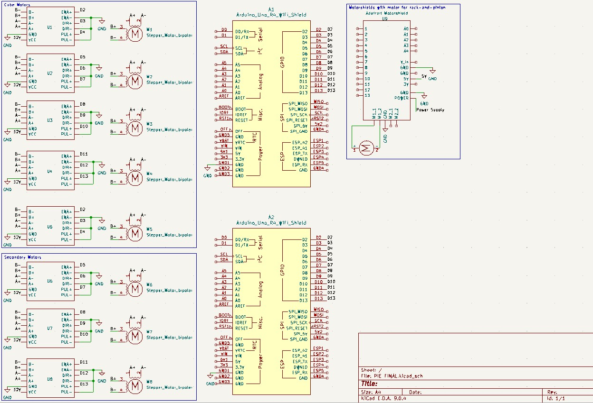

Overview
The electrical system provides the movement of the cubes through cube motors that rotate the cube to solve it. It consists of motors (5 cube motors, 3 secondary motors and 1 motor for the rack-and-pinion), motor drivers, and Arduinos.
Electrical Components
Arduino Uno R4 - We use three Arduino Uno R4s to control the motors. The Arduinos receive commands from the Raspi through Serial input via USB cable. The commands from the Raspi are in the form of a 3-digit integer. The first digit corresponds to the Arduino board ID, the second identifies the motor, and the third digit informs of the direction to rotate.Motor Drivers - We use TB6600 drivers to drive our motors
Cube motors - We use NEMA17 motors with mounts and inserts to attach to the cube. We set the basic unit of movement for the cube motors to be a single 90 degree turn, which translates to 200 microsteps for the driver we use.
Secondary Motors - We use NEMA17 motors for these as well. For the two pulley motors, we use 90 degree turns to move it in and out; for the bottom motor with the lead screw, we use twenty 90 degree turns to bring the bottom cube motor up and down.
Power Supply - The Raspi derives its power from a power supply (5.1V, 2.5A) and powers the Arduinos. The motors are powered by a 12V, 4A power supply, fed in by the drivers.